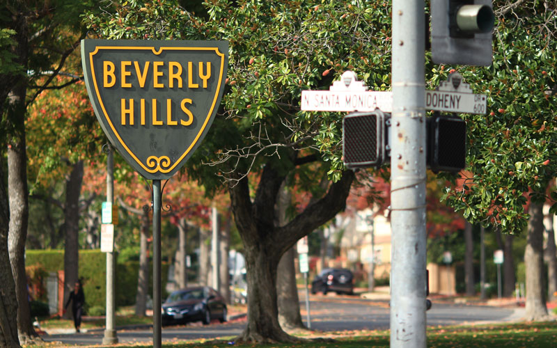
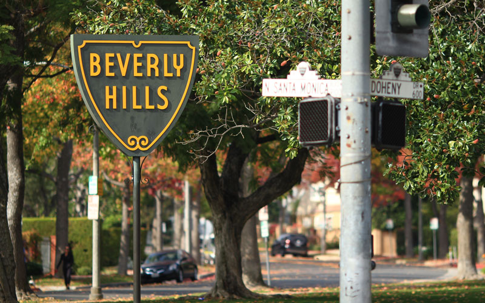

Coding the Past
Humanities
My top three traits from the VIA personality quiz were fairness, equity, and justice. I chose pictures that I felt represent those traits by using pictures of things that were directly about those, and others that kind of implied in a sense that it showed what I believe in through pictures of protests and things like that. They’re pictures of happy things, for the most part. I want 2018 to be a year of happiness and self discovery. Some images felt like they had a heavier meaning, such as the picture titled “Self Discovery.” Since that’s one of the things I want to focus on a lot in 2018, I wanted that to be a prominent picture. I learned that things are a lot tougher than I thought they would be. I even had to change up the whole project in the last couple days. I realized that if I work really hard, I can get results I’m happy with.
My subject was Fred Ephraim. I chose to interview him because he has a very interesting history. From writing a couple novels and guest starring in a few soap operas to owning a farm in Illinois and golfing or taking his yacht for day trips in Florida, he has led a very different life than many people. He now works as the lead therapist at Massage Envy Beverly Hills, quite the change from his previous engagements. Quite a few of the photos I chose-- almost half, in fact-- are something related to President Barack Obama. I chose this because in the interview, he explained that the 2008 election is one of the most memorable moments in history for him. He never thought it would be possible for a black man to take such a high position in the American government system because of this country’s history of racism and bigotry. To see a black man elected as President was a great, and surprising, moment for him. I also chose images of places like Queens, New York, Brooklyn, New York, Spain, Amsterdam, Beverly Hills, and Paris because those are places he had lived. I wish I had included more about Paris because he said that was his favorite place he has lived. Paris is a very diverse place, and it’s not strange to see people of all different races, religious, and creeds there. He obviously really enjoys living in diverse environments. I also included a few photos related to the Civil Rights Movement in the 1960s. As a black man just reaching his adult years in America during that time, the events of the era had most definitely affected him greatly. I put a majority of the photos of cities as the background. I chose to do so because I felt like they would give a nice visual appeal to the person looking at the final project. The colors don’t clash with each other and are appealing to the eye without being too much of a focal point. Some of the other photos, such as those of people or events, were put more in the corner so they wouldn’t take too much attention away from the picture of Fred I added in at the end. I made the picture of him the focal point, so it would be obvious who the whole portrait was about.
 
